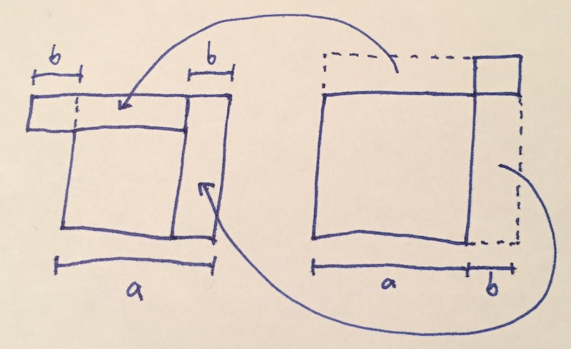

The Variance Sum Law is Interesting
Friday October 30, 2020
The Variance Sum Law is simple enough that it's often given without explanation, but I think it's interesting enough that it deserves a little thought.
The Variance Sum Law says that for two independent random variables \( A \) and \( B \) with variances \( \sigma_A^2 \) and \( \sigma_B^2 \), the sum \( A+B \) has variance \( \sigma_{A+B}^2 = \sigma_A^2 + \sigma_B^2 \).
Explaining an application of this, you might consider an example: say \( a = 10 \) and \( b = 3 \).
This kind of example is used in at least one course to introduce analysis of variance. After introducing the \( 13 = 10 + 3 \) part, they continue:
"Although the derivation isn't as simple as it seems, the decomposition holds for the sum of the squared distances, too."
It's possible to find a derivation, but they're generally not very satisfying. And you know that the sum of squares is not the same as the square of the sum: \( 13^2 \neq 10^2 + 3^2 \) because \( 169 \neq 109\). So what's going on?
Using a single example helps explain what one element of data looks like, but a single example doesn't have a variance.
We can make the example just slightly more complete to show how variances add.
Say \( A \) is \( +10 \) half the time and \( -10 \) half the time, while \( B \) is equally likely to be \( +3 \) or \( -3 \). So \( \sigma_A^2 = 100 \) and \( \sigma_B^2 = 9 \).
All our squares will be positive, so we can ignore negative outcomes by symmetry here.
With that simplification, notice \( A + B \) is equally likely to be \( 10 - 3 = 7 \) or \( 10 + 3 = 13 \).
\[ \frac{(10-3)^2 + (10-3)^2}{2} = \frac{7^2 + 13^2}{2} = \frac{49 + 169}{2} = \frac{218}{2} = 109 = 100 + 9 = 10^2 + 3^2 \]
The addition and subtraction cancel out after squaring so that the variances add.
This property, that \( (a+b)^2 + (a-b)^2 = 2(a^2 + b^2)\), is what makes variance decomposition work, for uncorrelated components.
It's simple algebra, but it's still kind of neat. Here's a geometric illustration:

\[ (a-b)^2 + (a+b)^2 = b^2 + a^2 + a^2 + b^2 \]
Maybe this is completely intuitive for some people, but for me this balancing of increased and decreased squares is something of a pleasant surprise. Stop and smell the mathematical roses, you know?
There's also a Pythagorean connection, which I think is neat, but I haven't so far gotten it lined up with my intuition.